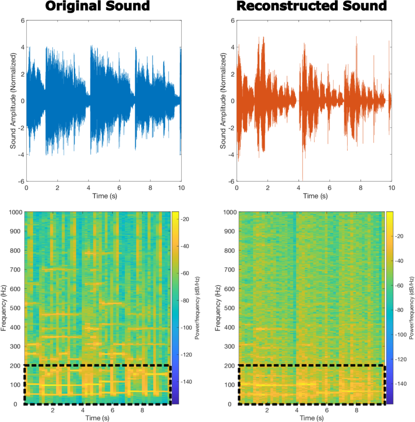
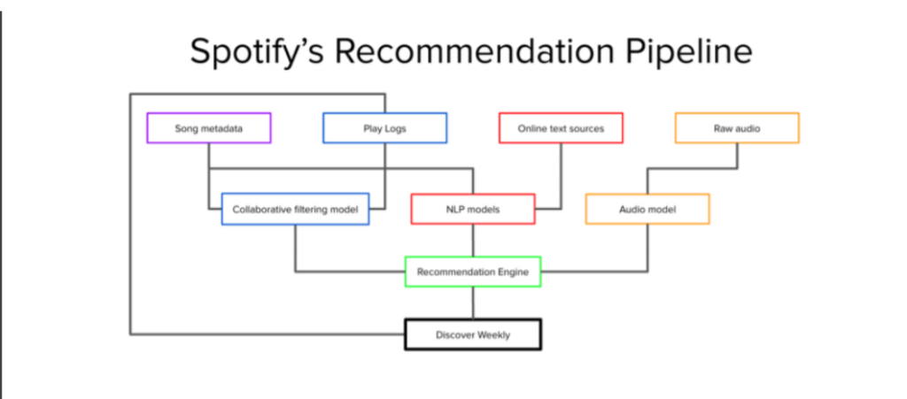
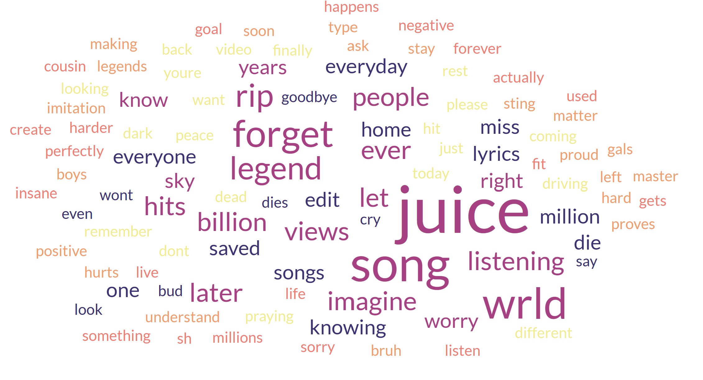
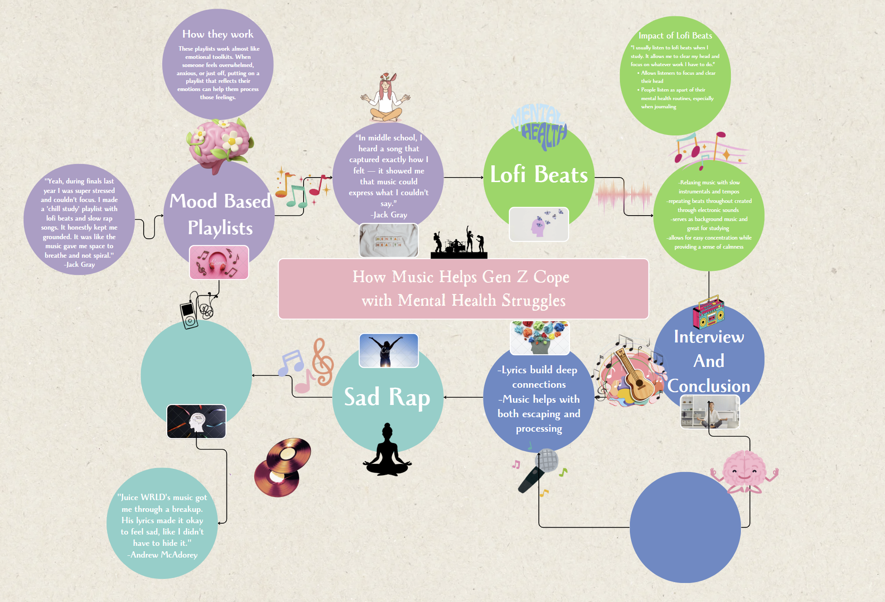
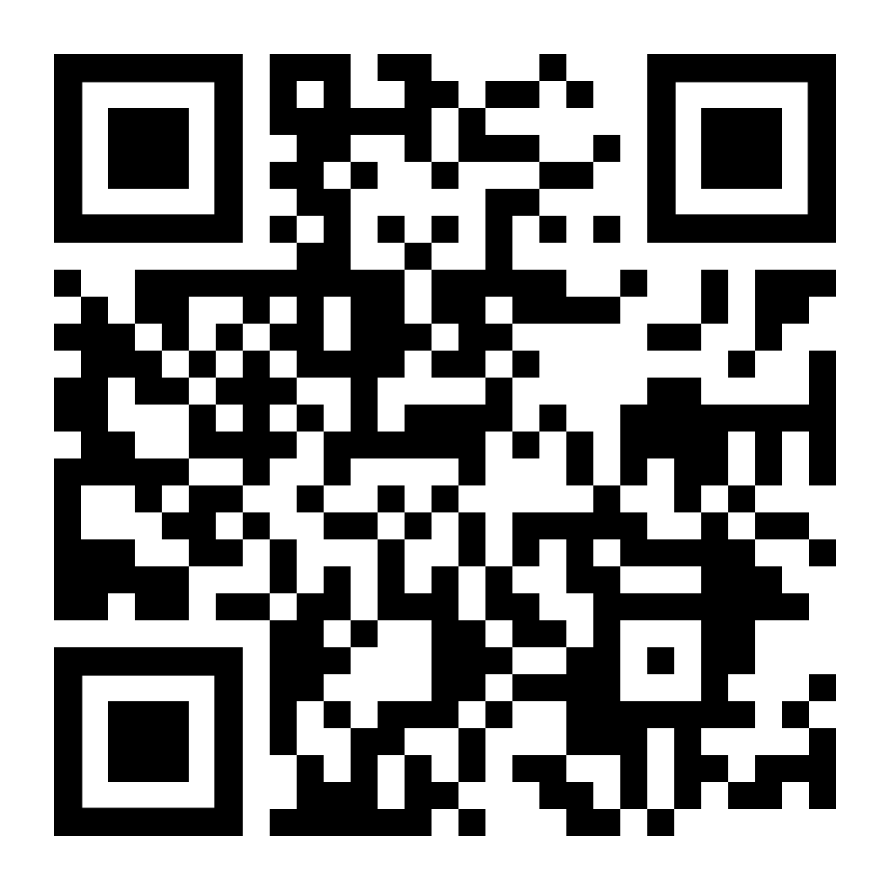

How Gen Z Uses Music to Cope With Mental Health
Picture this: It’s 3AM. Your phone glows in the dark as TikTok dances flicker across the screen, but you’re not watching. Your AirPods are pumping a carefully curated mix of ambient synths and muffled jazz samples. Your psychology paper is due in 5 hours. Your DMs are a minefield. Your parents still don’t get it. But for these 3 minutes and 26 seconds? The world softens. This is Gen Z’s silent rebellion—a generation weaponizing soundwaves to stay sane.
For our Music 137 final project, we dove into the sonic survival toolkit of Zoomers. What we found wasn’t just playlists, but emotional prosthetics—music engineered to stabilize, validate, and resuscitate. From the ASMR, like whispers of lo, fi to the raw scream, therapy of sad rap, Gen Z isn’t just listening. They’re self, medicating.
This isn’t a superficial aesthetic. It’s not “just vibes.” It’s how our generation performs emotional hygiene in an overstimulated, under, supported society. And while older generations scoff at our need for “coping playlists” or dismiss it all as melodramatic noise, they’re missing the bigger picture: this is a generation learning how to soothe itself using the only tools it’s been given—algorithms, headphones, and a relentless flood of content.
Let’s dissect the magic: Why does a genre built on imperfections (hence “lo, fi”) feel so perfectly engineered for Gen Z’s anxiety? The answer lies in its calculated chaos. Those vinyl crackles? They mirror the static of a distracted brain. The BPM (60, 90 range) syncs with a resting heartbeat. Even the artwork—eternal anime students writing essays in neon, lit rooms—is a dopamine trigger saying, “You’re not alone in this grind.”
Neuroscience backs this up. A 2022 UCLA study found that lo, fi’s repetitive structures activate the default mode network—the brain region responsible for introspection. Unlike Mozart (sorry, boomers), lo, fi doesn’t demand attention. It’s a cognitive security blanket, softening the edges of all, nighters and existential dread. Platforms caught on fast: YouTube’s “Lofi Girl” has streamed nonstop since 2015, becoming the generation’s collective study buddy.
What’s wild is that even though this genre is often dismissed as background music, it’s actually one of the most actively used tools for mood regulation in our generation. It doesn't just help us concentrate—it helps us stay sane. That’s huge. We’re not just using lo, fi to block out noise, we’re using it to block out the existential pressure of always needing to be productive.

Spotify’s “sad girl starter pack” isn’t just a playlist—it’s a lifeline coded by data scientists. Gen Z’s playlists read like medical charts: “8AM Existential Crisis,” “Anxiety Glitter,” “Post, Therapy Come Down.” These aren’t random; they’re precision tools. A 2023 study found that 68% of Zoomers use playlists to “shift emotional gears” faster than talking to friends.
These playlists aren’t just therapeutic—they’re curatorial acts of emotional intelligence. To scroll through someone’s Spotify profile today is to browse their soul. What someone puts in their “Songs That Hurt But Heal” playlist says more than an Instagram caption ever could.
And if you think this is all just sad, girl aesthetics, think again. It’s radical vulnerability wrapped in reverb and soft piano. It's therapy made accessible. It's mutual recognition: someone else feels this too, and they made this song for people like me.

Let’s get uncomfortable. When Juice WRLD rapped “All the girls taste like sad candy,” he wasn’t being poetic—he was describing the saccharine numbness of Xanax addiction. This is music that doesn’t just acknowledge pain; it dissects it live on the operating table. The production choices are surgical: autotune so thick it sounds like drowning, 808s that hit like panic attacks, ad, libs that echo like intrusive thoughts.
Sad rap is Gen Z’s catharsis engine. It doesn't try to rescue us from the edge—it sits beside us on it. These songs offer no easy answers. But in a world where therapy is expensive, friends are busy, and silence is scary, they’re often all we have.
These artists didn’t just make music—they made emotional ecosystems. Places where feelings are allowed to be ugly and still valid. Where masculinity is softened and sadness is sacred. That kind of permission matters.

We infiltrated Duke’s music subcultures and found a thriving black market of emotional support bops:
We also discovered anonymous Instagram accounts sharing student, submitted confessions with soundtrack pairings: “This Phoebe Bridgers track = the night I came out to my homophobic dad.” Or “Sufjan Stevens and my panic attacks are in a situationship.”
While all the research and cultural analysis is compelling, we didn’t want to lose sight of the human stories behind this music. So we asked Duke students about their own listening habits—and what we heard was honest, moving, and familiar.
Music has become more than a coping mechanism—it’s a method of meaning, making. Whether students are crying into SZA or grinding out a problem set to Lofi Girl, they’re using music to process, survive, and connect. In an era of disconnection, it might just be the most powerful thing we still share.

We made a playlist that captures everything we’ve talked about—lo, fi beats, sad rap, and mood, based soundtracks for your feelings. Scan the code below and listen along.
